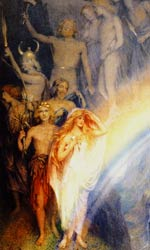

Аси, в скандинавської міфології основна група богів на чолі з Одіном, батьком більшості асів, які любили, боролися і вмирали, оскільки, подібно людям, не мали безсмертям. Ці боги протиставляються ванам (богам родючості), велетням (етунам), карликам (ЦВЕРГ), а також жіночим божествам - дісам, норнам і Валькірія. Вони жили в небесній фортеці Асгард, яка з'єднувалася з землею людей, Мідгард, райдужним мостом Біврест.
Асам - богам-воїнам поклонялися герої і королі. Ватажком героїчних асів був Один, на картині Уіяльяма Коллингвуда він зображений в рогатій шоломі йде за юними і прекрасними богами і богинями, що втілюють силу і красу. Асами, крім Одіна були двадцять сім богів-воїнів і двадцять дві богині.
У північних міфах серед них найбільш відомі - Бальдр, Боррего, Браги, Бурі, Відар, Валі, Ве, Вілі, Дагрей, Деллін, Локі, Магни, Ньерд, Тор, Тюр, Форсети, Фрейр, Хед, Хеймдалль, Хермод, а також богині Ейрд, Ідунн, Нанна, Нотт, Сага, Сів, Сігунн, Сіль, Фрігге, Фрейя.
Власне, в скандинавської міфології дві групи богів - аси і вани. Тільки аси були жителями небесного міста Асгарда, які в давнину воювали з ванами, але потім вирішили укласти мир і обмінялися богами. Аси відправили до ванам Хенир і Міміра, а вани послали в Асгард Ньерда, Фрей, Фрейра і мудрого квасір.